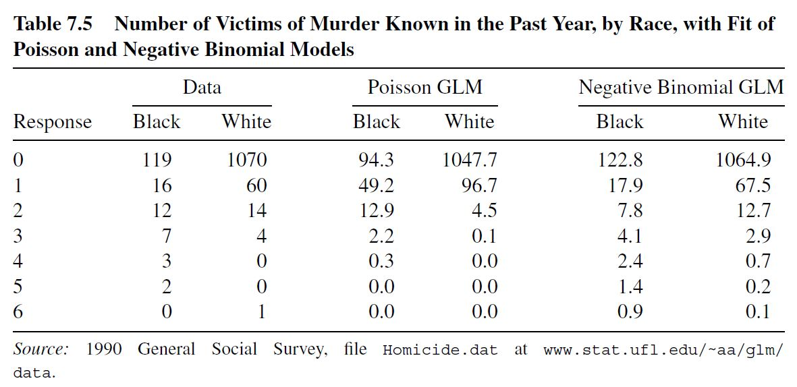
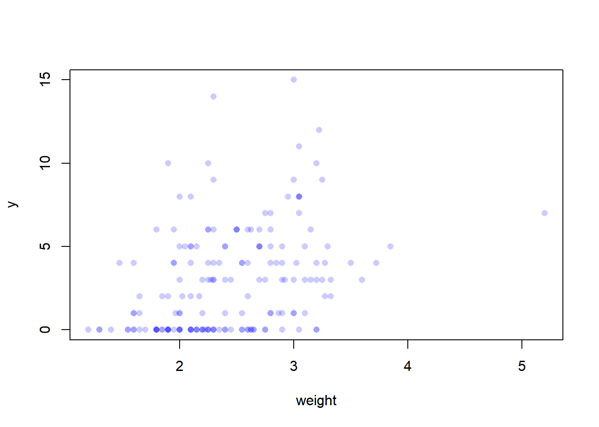
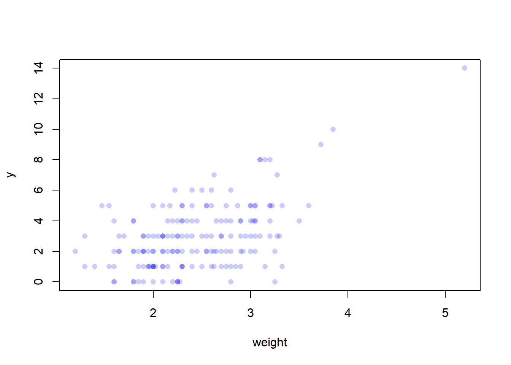

Week 7: Models for over- and underdispersed counts, and model validation by AIC
comments
Tricking MathJax with invisible \(a^2+b^2\)
The main topic of this week are slightly advanced models for count data, and model assessment. As time allows, we will also treat some “loose ends”, such as the Fisher scoring method behind the glm function, and more background on contingency tables and the Poisson trick.
The Poisson model is a good start for count data. Sometimes, however, there is more variation in the data than we would expect under a Poisson model. This is called overdispersion. One reason for overdispersion is that the population is composed of subpopulations with different mean. We will learn about the negative binomial distribution as a mixture of Poisson distributions. Another reason for overdispersion is zero-inflation: there are more “0”s in the data than we would expect under the models in question.
A very popular general tool for assessment of model fit is Akaike’s information criterion (AIC). You will apply this to glms, and learn about its theoretical background: it is related to the mean Kullback-Leibler divergence between the “true” distribution and all fitted distributions from a family.
Relevant Readings
Models for overdispersed count data, zero-inflation: Agresti, 7.3 and 7.4.1, also start of Section 10.6 in Davison (without the paragraph on quasi-likelihood).
The first two problems are data analysis problems. If you have only little time, attempt at least one of them. The third and fourth problem add to your statistician’s toolbox.
Tricking MathJax with invisible \(a^2+b^2\)
Problem 7.1: Lizards: compare modelling approaches
Davison Practical 10.5:
Data set lizards contains the numbers of two species of lizard, grahami and opalinus, observed in Whitehouse, Jamaica, at two different heights, two perch diameters, in sun or shade, at three times of the day. The data were collected by observing occupied perches and recording the appropriate height, perch diameter, and so forth.
Interest lies in the difference in habitat choice between the species. Analyze the data by approaches (i)-(iii) below, comparing their relative advantages and disadvantages, and paying particular attention to the interpretation of the models you choose.
A conventional analysis of variance.
A generalized linear model with binomial error, based on the probability that a perch is occupied by one species, given that it is occupied. Discuss the similarities and dissimilarties with (i).
A log-linear model.
(Sections 10.4–10.5; Bishop et al., 1975, p. 164)
Tricking MathJax with invisible \(a^2+b^2\)
Problem 7.2: Homicides
(based on Agresti, problem 7.31)
Table 7.5. in Agresti(2015), shown below, summarizes responses of 1308 subjects to the question: within the past 12 months, how many people have you known personally that were victims of homicide?
The table shows responses by race, for those who identified their race as white or as black. You can download the data homicides.csvhere or find it in thedata folder on Google Drive.

Let \(y_i\) denote the response for subject \(i\) and let \(x_i = 1\) for blacks and \(x_i = 0\) for whites. Fit the Poisson GLM \(\log \mu_i = \beta_0 +\beta_1 x_i\) and interpret \(\hat\beta\).
Describe factors of heterogeneity such that a Poisson GLM may be inadequate. Fit the corresponding negative binomial GLM, and estimate how the variance depends on the mean. What evidence does this model fit provide that the Poisson GLM had overdispersion? (Table 7.5 also shows the fits for these two models.)
R hint: use glm.nb from package MASS
Verify Table 7.5 (calculate the numbers in the table yourself). Hints: get the predicted numbers from the probabilities under the fitted distributions (there were 159 black and 1149 white persons in the study).
R hints: obtain negative binomial probabilities with dnbinom. For frequencies of the actual data, use the R function table.
Show that the Wald 95% confidence interval for the ratio of means for blacks and whites is (4.2, 7.5) for the Poisson GLM but (3.5, 9.0) for the negative binomial GLM. Which do you think is more reliable? Why?
Tricking MathJax with invisible \(a^2+b^2\)
Problem 7.3: The index of dispersion test
For i.i.d. samples \(\boldsymbol{Y}=(Y_1,\dots, Y_n)\), the index of dispersion is defined as \[
D(\boldsymbol{Y}) = \frac{S^2}{\overline{Y}}, \ \text{where}\ \overline{Y}=\frac{1}{n}\sum_{i=1}^n Y_i,\ \ S^2 = \frac{1}{n-1}\sum_{i=1}^n (Y_i - \overline{Y})^2.
\]
If the sample comes from a Poisson distribution, the expectation of the numerator is the same as the expectation of the denominator. Therefore, values close to 1 suggest Poisson distribution, while values larger than 1 indicate overdispersion and values less than 1 indicate underdispersion.
Under the Poisson assumption, \((n-1)D(\boldsymbol{Y})\) is approximately \(\chi^2\) distributed with \(n-1\) degrees of freedom. This can be used to construct an approximate test for the hypothesis that the data stem from a Poisson distribution. A popular rule of thumb tells that the approximation is good, when the mean of \(Y\) is larger than 5 (in the literature, this is commonly called \(m>5\)), even when the sample size \(n\) is small.
The rule of thumb is apparently due to Hoel (1943)1, who studied the quality of the \(\chi^2\) approximation by numerical calculations. He looked at various combination of theoretical mean \(m\) and sample size \(n\), and concluded that the test becomes slightly conservative if \(m \leq 2\).
Conduct a simulation experiment to check Hoel’s findings: estimate the true rejection rate of a \(\chi^2\) based index of dispersion test, for \(m \in\{1, 2, 5, 25\}\) and \(n\in\{3, 5, 10, 25\}\).
Hints
to estimate the rejection rate, find the critical values of the \(\chi^2\) distribution. For a two-sided test that is sensitive to both over- and underdispersion, reject the null hypothesis if \(D\) is smaller than the \(\alpha/2\)- quantile or larger than the \((1-\alpha/2)\)-quantile of the \(\chi^2\) distribution.
An R hint for fast generation of (nrep) realizations of \(D\):
Y <-matrix(rpois(n * nrep, m), nrow = n)D <-apply(Y, 2, var) /apply(Y, 2, mean)
Use the index of dispersion test to check if the Poisson model is appropriate for the data from the previous exercise about homicides (Agresti, Table 7.5). Treat black and white persons as separate samples from possibly different Poisson distributions.
Problem 7.4: Simulation based model tests
Consider Exercise 6.3, “A graphical model check” from last week. You can turn this “gut feeling” into a test with well defined rejection rate \(\alpha = 0.05\) by simulating 19 realizations, and arranging them on a grid together with the one observed plot at a random position within the 20 plots. Then ask an impartial judge (e.g. your grandmother) to point out the most unusual plot – this test rejects the null hypothesis if the judge pointed at the plot made from the actual data. One problem here is that the test may be conservative because you test the fitted model. But for a given model, the size of this test is equal to \(\alpha\).
Discuss why this is a test of size \(\alpha\) for a given model. What is \(\alpha\) if you only simulate 9 plots?
R hint
In Problem 6.3 you were asked to compare scatterplots of the crabs data with scatterplots of simulated data from the fitted model. Here is one way to solve this.
We make the scatterplot with transparent dots to make multiplicity of observations visible. adjustcolor is an easy way to define transparent colors
crabs <-read.csv("./data/crabs.csv") transparentblue <-adjustcolor("blue", alpha =0.2) plot(y ~ weight, data = crabs, pch =16, col = transparentblue)

The R function simulate simulates response values from a fitted model. It returns a data.frame where each column corresponds to one simulation. If you do not specify the argument nsim, it will just simulate one realization.
# fit model fitted <-glm(y ~ weight, data= crabs, family = poisson)# make 4 simulations from fitted model and plot new_y <-simulate(fitted)plot(new_y[,1] ~ weight, data = crabs, pch =16, col = transparentblue, ylab ="y")

Check out the R package DHARMa. Explain what it does, discuss if you find it useful :-)
I will probably use the last problem as an example in one of the lectures this week. Watch out for some R goodies :-)
Tricking MathJax with invisible \(a^2+b^2\)
Problem 7.5: Shark attacks
(modified from Agresti, problem 7.30)
A headline in The Gainesville Sun (February 17, 2014) proclaimed a worrisome spike in shark attacks in the previous 2 years. The reported total number of shark attacks in Florida per year from 2001 to 2013 were 33, 29, 29, 12, 17, 21, 31, 28, 19, 14, 11, 26, 23.
Are these counts consistent with a null Poisson model or a null negative binomial model 2?
Test the Poisson model against the negative binomial alternative.
Analyze the evidence of a positive linear trend over time, both for a Poisson and a negative binomial model. Comment on the results.
You can use glm.nb from package MASS to fit negative binomial glms. You can call this function as MASS::glm.nb, then you don’t need library("MASS").
The Poisson model can be seen as a submodel of the negative binomial model. Therefore, you can use a likelihood-ratio test. To this end, R-function logLik may be handy. Check out how to use it.
Function summary for fitted linear models shows \(p\)-values for the coefficients. This can be used in part b.
Footnotes
Paul G. Hoel (1943): On Indices of Dispersion. The Annals of Mathematical Statistics, 14(2): 155–162.↩︎
“null model”: mean (and variance) do not depend on any explanatory variables↩︎